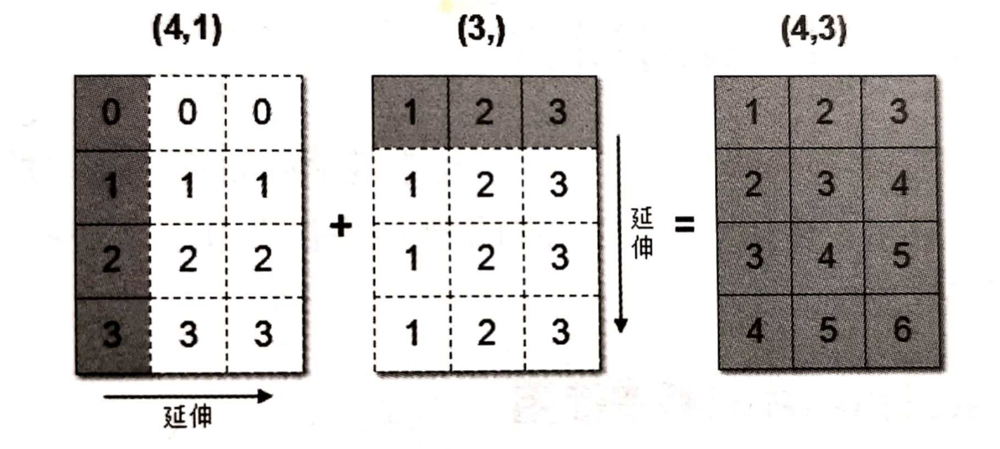

4.5 数组间运算
学习目标
- 目标
- 知道数组与数之间的运算
- 知道数组与数组之间的运算
- 说明数组间运算的广播机制
1 数组与数的运算
arr = np.array([[1, 2, 3, 2, 1, 4], [5, 6, 1, 2, 3, 1]])
arr + 1
arr / 2
# 可以对比python列表的运算，看出区别
a = [1, 2, 3, 4, 5]
a * 3
2 数组与数组的运算
arr1 = np.array([[1, 2, 3, 2, 1, 4], [5, 6, 1, 2, 3, 1]])
arr2 = np.array([[1, 2, 3, 4], [3, 4, 5, 6]])
上面这个能进行运算吗，结果是不行的！
2.1 广播机制
数组在进行矢量化运算时，要求数组的形状是相等的。当形状不相等的数组执行算术运算的时候，就会出现广播机制，该机制会对数组进行扩展，使数组的shape属性值一样，这样，就可以进行矢量化运算了。下面通过一个例子进行说明：
arr1 = np.array([[0],[1],[2],[3]])
arr1.shape
# (4, 1)
arr2 = np.array([1,2,3])
arr2.shape
# (3,)
arr1+arr2
# 结果是：
array([[1, 2, 3],
[2, 3, 4],
[3, 4, 5],
[4, 5, 6]])
上述代码中，数组arr1是4行1列，arr2是1行3列。这两个数组要进行相加，按照广播机制会对数组arr1和arr2都进行扩展，使得数组arr1和arr2都变成4行3列。
下面通过一张图来描述广播机制扩展数组的过程：

广播机制实现了时两个或两个以上数组的运算，即使这些数组的shape不是完全相同的，只需要满足如下任意一个条件即可。
- 1.数组的某一维度等长。
- 2.其中一个数组的某一维度为1 。
广播机制需要扩展维度小的数组，使得它与维度最大的数组的shape值相同，以便使用元素级函数或者运算符进行运算。
如果是下面这样，则不匹配：
A (1d array): 10
B (1d array): 12
A (2d array): 2 x 1
B (3d array): 8 x 4 x 3
思考：下面两个ndarray是否能够进行运算？
arr1 = np.array([[1, 2, 3, 2, 1, 4], [5, 6, 1, 2, 3, 1]])
arr2 = np.array([[1], [3]])
3 小结
- 数组运算,满足广播机制,就OK【知道】
- 1.维度相等
- 2.shape(其中对应的地方为1,也是可以的)